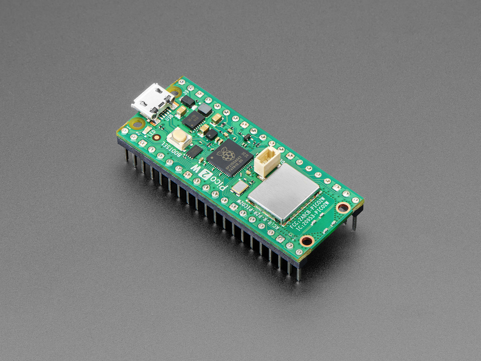

Go tho the official link and click on the option for your board I will use:

pi pico 2 w
note: this will allow the board to appear the board as a USB STORAGE device

Go tho the official link and click on the option for your board I will use:

pi pico 2 w
note: this will allow the board to appear the board as a USB STORAGE device
If you don't see RPI-RP2 or RP2350,or whataver name your board is, common causes are: